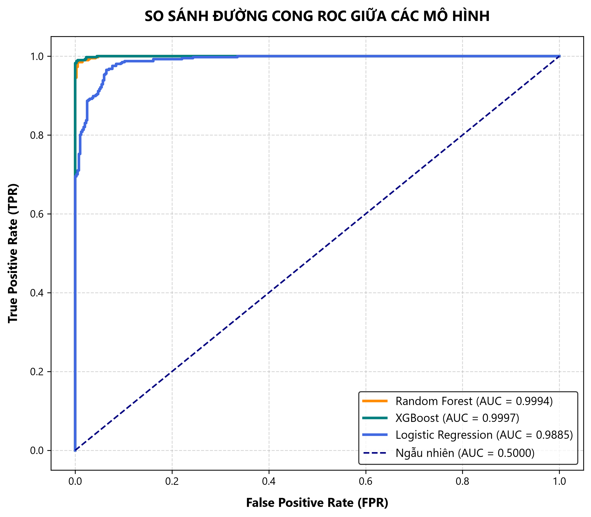
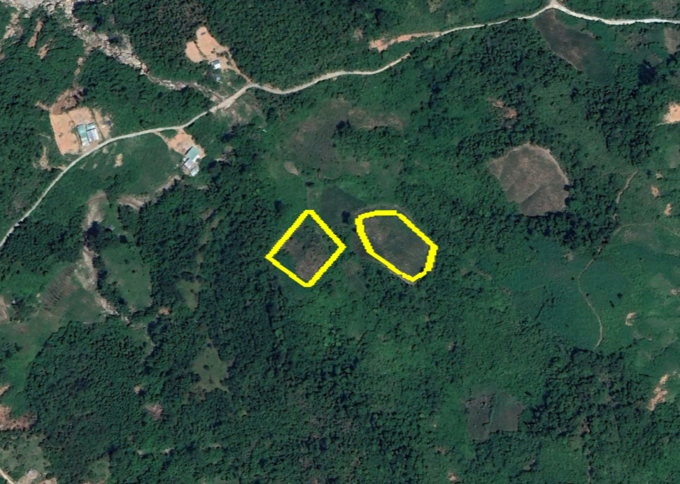
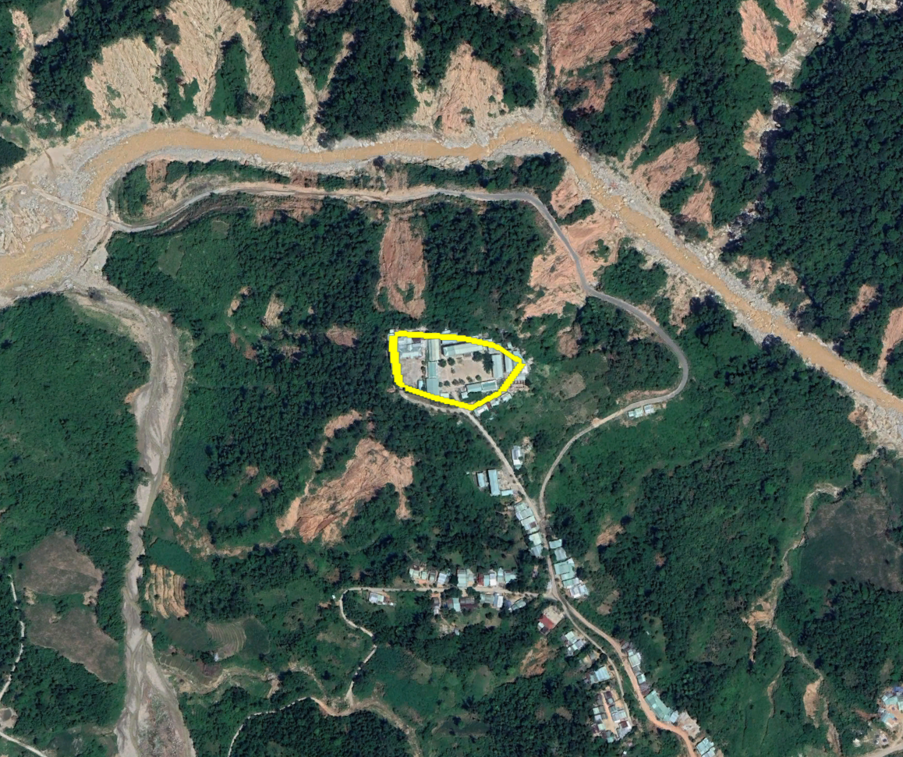
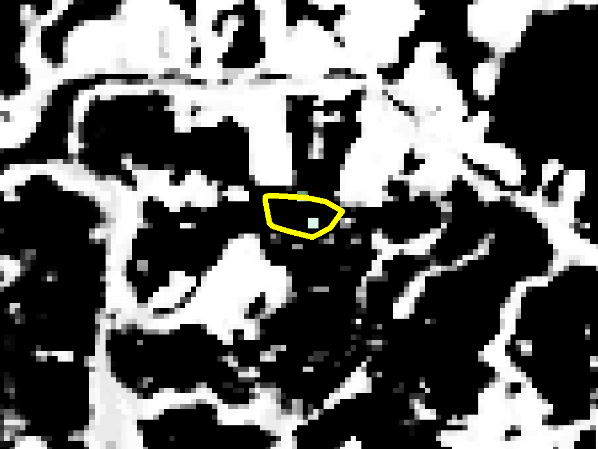

Phước Sơn
Geoportal
S2 · ML
Đánh giá trên bộ dữ liệu thực địa chuẩn hóa (4,050 pixels: 2,033 pixels sạt lở và 2,017 pixels không sạt lở; tỷ lệ Train 80% / Test 20%).
| Mô hình (Model) | Phân tập (Split) | TP | FP | TN | FN | Accuracy | Kappa | Sensitivity | Specificity | AUC |
|---|---|---|---|---|---|---|---|---|---|---|
| XGBoost model | Testing (810 px) | 401 | 1 | 402 | 6 | 0.9914 | 0.9827 | 0.9853 | 0.9975 | 0.9997 |
| XGBoost model | Training (3,240 px) | 1,621 | 4 | 1,610 | 5 | 0.9972 | 0.9944 | 0.9969 | 0.9975 | 1.0000 |
| RF model (Random Forest) | Testing (810 px) | 401 | 3 | 400 | 6 | 0.9889 | 0.9778 | 0.9853 | 0.9926 | 0.9994 |
| RF model (Random Forest) | Training (3,240 px) | 1,622 | 9 | 1,605 | 4 | 0.9960 | 0.9920 | 0.9975 | 0.9944 | 1.0000 |
| LR model (Logistic Regression) | Testing (810 px) | 391 | 26 | 377 | 16 | 0.9481 | 0.8963 | 0.9607 | 0.9355 | 0.9885 |
| LR model (Logistic Regression) | Training (3,240 px) | 1,517 | 130 | 1,484 | 109 | 0.9262 | 0.8525 | 0.9330 | 0.9195 | 0.9850 |


Đối chiếu kết quả dự báo của mô hình XGBoost với ảnh vệ tinh Google Earth để kiểm chứng khả năng loại trừ các vùng suy giảm NDVI do phá rừng hoặc xây dựng công trình.




